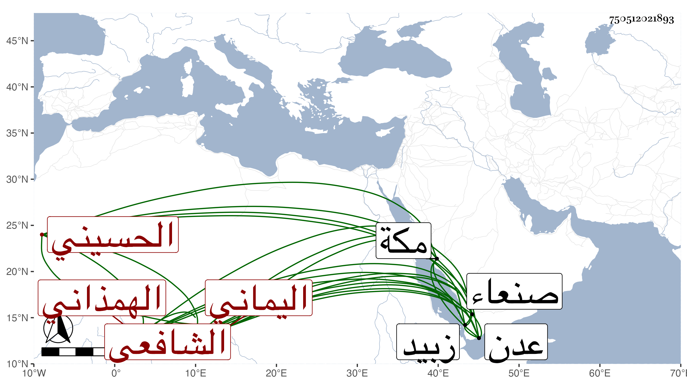

0902Sakhawi.DawLamic.ITO20230111-ara1.EIS1600.750512021893
Biography ID: 750512021893
675
علي بن أبي بكر الأزرق بن خليفة بن نوب موفق الدين ونور الدين أبو الحسن الهمذاني الأصل الحسيني اليماني الشافعي ويعرف بابن الأزرق . تفقه ببلده أبيات حسين على الفقيه يحيى العامري وإبراهيم بن مطير وغيرهما وقرأ في الفرائض على خاله أبي بكر بن عمران ثم ارتحل إلى زبيد فسمع بها الحاوي على الفقيه أبي بكر الزبيدي وقرأ الجبر والمقابلة على ابن الجلاد أمام أهل الفن في وقته ، وحج وأخذ بمكة عن العفيف اليافعي ثم عاد إلى بلده ومهر في الفقه والحساب وأكثر من مطالعة كتب المذهب وفرغه الله من الشواغل فما كان يبرح مطالعا أو مدرسا أو مذاكرا أو محصلا للفائدة أو مصنفا ، ودرس وأفتى نحو خمسين سنة وتعين في بلده نحو خمس عشرة سنة وصار المرحول إليه والمعول في الفتوى عليه في تلك الجهات قريبها وبعيدها من الجبال والتهائم كزبيد وعدن وصنعاء وغيرها وتفقه به كثيرون من أهل بلده وغيرها وألف كتبا مفيدة كنفائس الأحكام المشتمل على خمسة أقسام الأول في تخريج المسائل الفرعية على النحوية الثاني في الفروعية على الأصولية الثالث في تناقض تصحيح الشيخين الرابع في المسائل اللغويات الخامس في مسائل منثورة نفيسة . قلت والثلاثة الأول تصانيف للاسنوي والرابع فلعله من التهذيب للنووي واختصر المهمات للاسنوي في نحو ثلاثة أرباعه مع مناقشات يسيرة وشرح التنبيه في مطول سماه التحقيق الوافي بالإيضاح الشافي في نحو الثلاثة أسفار ومتوسط سماه التحقيق في جزءين محقق كاسمه وشرح الكافي في الفرائض شرحا حسنا سماه بغية الخائض في شرح الفرائض وكذا له نكت على الكافي أيضا ، وممن أخذ عنه من شيوخنا البدر حسين بن عبد الرحمن الأهدل وأبو الفتح المراغي قرأ عليه في سنة اثنتين وثمانمائة قطعة من أول نفائس الأحكام له والتقى بن فهد قرأ عليه في سنة خمس وثمانمائة من أول شرحه الكبير للتنبيه وأجاز لهم ومات في يوم السبت خامس عشري رمضان سنة تسع بأبيات حسين عن نحو ثمانين سنة رحمه الله .
